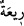

“Bilin ki, ben size” Allah tarafından “gönderilmiş güvenilir” aranızda emanet ve
güvenirliliği ile tanınan “bir elçiyim.”
126. Artık Allah’a karşı gelmekten sakının ve bana itaat edin.
“Artık Allah’a karşı gelmekten sakının” Allah’ın cezasından korkun “ve” size
emrettiğim hak konusunda “bana itaat edin.”
127. Buna karşı sizden hiçbir ücret istemiyorum. Benim ecrimi verecek olan,
ancak âlemlerin Rabbi’dir.
“Buna karşı” yani risâlet görevim karşılığında bazı kıssa anlatanların taleb ettiği gibi
“sizden hiçbir ücret istemiyorum. Benim ecrimi verecek olan, ancak âlemlerin
Rabbi’dir.” Çünkü beni gönderen O’dur. Dolayısıyla ücretim de O’na âiddir.
Bu sözler onun dünyevî beklentilerden ve gayelerden uzak olduğunun beyanıdır.
Hâfız der ki:
Sen kulluğu dilenciler gibi ücret karşılığı yapma
Çünkü dost, kullarını beslemenin yolunu kendisi bilir
128. Siz her yüksek yere bir alâmet dikerek eğleniyor musunuz?
“Siz her yüksek yere bir alâmet” diğer binalardan ayrılan daha yüksek bir bina
“dikerek” bina ederek “eğleniyor musunuz?”
Buradaki soru reddetmek içindir (istifhâm-i inkârî).
“
” kelimesi, “
”nün çoğulu olup yüksek yer demektir.
Zarûreti olmayan ve ihtiyaçtan fazla bina yapmak abestir.
Rivâyet edildiğine göre Rasûlullah (s.a.) bir gün dışarı çıkmıştı. Yüksekçe bir kubbe
gördü. “Bu nedir?” diye sordu. Ashabı: “Bu Ensar’dan birine âiddir.” dediler.
Rasûlullah (s.a.) bekledi. Ancak binaya karşı içinden hoşnutsuz olmuştu. Nihâyet kubbe
sahibi Rasûlullah (s.a.)’in yanına geldi. İnsanların içinde O’na selam verdi. Rasûlullah